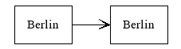
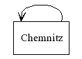
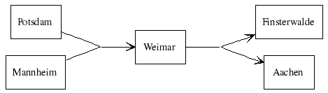

Graph::Easy support a wide array of features, below you will find a brief overview of some of them:
Nodes with the same text
Since each node is unique, there cannot be two nodes with the same name. Since it is sometimes desired to have two nodes with the same text appearing in the layout, you can override the text displayed with a label:
[ Bonn ] { label: Berlin; } -> [ Berlin ]
This will be rendered like this:
+--------+ +--------+ | Berlin | --> | Berlin | +--------+ +--------+
Multi-Edges
Most graphing packages also allow multi-edges. A multi-edge graph simply allows two edges going from the same starting node to the same target node:
[ Rostock ] -> [ Wismut ] [ Rostock ] -> [ Wismut ]

+---------------+ | v +---------+ +--------+ | Rostock | --> | Wismut | +---------+ +--------+
Self-Loops
In addition to that, self-loops are usefull for state-machines and flowcharts. A self-loop is one edge going from one node back to the same node again:
[ Chemnitz ] -> [ Chemnitz ]
+------+ v | +----------+ | Chemnitz | +----------+
Undirected and bidirectional edges
Another often used feature are undirected or bidirectional edges:
[ Hamm ] <--> [ Leverkusen ] [ Wismut ] -- [ Plauen ]

+--------+ +------------+ | Hamm | <--> | Leverkusen | +--------+ +------------+ +--------+ +------------+ | Wismut | ---- | Plauen | +--------+ +------------+
Groups (Clusters or Subgraphs)
Also, subgraphs (called "groups" in Graph::Easy) allow you to cluster nodes together:
( Capitals: [ Bonn ], [ Berlin ] )
+ - - - - - - + ' Capitals: ' ' ' ' +---------+ ' ' | Berlin | ' ' +---------+ ' ' +---------+ ' ' | Bonn | ' ' +---------+ ' ' ' + - - - - - - +
It is also possible to nest groups (not yet implemented), and to have edges
going from a group to a node, vice versa, or even from a group to another
group.
See the appropriate chapter about Hinting
for more details and examples.
Joints (Edges Splicing and Splitting)
You can also have edges that split or join up, or do both at the same time:
[ Potsdam ], [ Mannheim ] --> { end: back,0; } [ Weimar ]
[ Weimar ] --> { start: front,0; } [ Finsterwalde ], [ Aschersleben ]

Output missing!
Flow directions
Graph::Easy allows you to adjust the flow of the entire graph, as well as
on any node, or even on a per edge-basis. Flow can be specified either
absolut (giving absolut directions like south or west),
or relative (directions left, front etc that
are relative to the local flow at that node).
graph { flow: west; }
[ Duisburg ] -> [ Siegen ] { flow: left; }
-> [ Adenau ]
[ Siegen ] -> { flow: up; } [ Monschau ]
+----------+ | Monschau | +----------+ ^ | | +----------+ +----------+ | Siegen | <-- | Duisburg | +----------+ +----------+ | | v +----------+ | Adenau | +----------+
For a complete overview of the possibilities of flow control, please the see the appropriate chapter about Hinting.